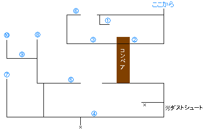

| なげきの山の賢者様 | なげきの山（ＬＶ３０）
山と山との間の鎖は渡ることができます イワンを倒すと技ポイントが１００ももらえるので、この辺でシャイニングを覚えておくと後が楽です 頂上でギガガイアとバトル！ ハイエーテル×２ シェルター ラピス×２ プラチナベスト プラチナメット 時の帽子 プロテクトボール×２ バリアーボール×３ ＶＳギガガイア 本体からスピードカプセルが盗めます 炎に耐性のあるレッドプレートやルビーベストなどを全員に装備させましょう 回復魔法を使う右腕から倒して次に左腕を倒し、本体を攻撃しましょう |
| 天空で待つものは | カジャールのヌウの質問に「いいえ」と答えると買い物ができます ここで装備を整えておきましょう ジール宮殿 女王の間でダルトンとバトル！ 海底神殿に行く ＶＳダルトン 鉄球しかしてこないが、死ぬときに全体攻撃をしてくるので気おつけよう |
| ラヴォスの呼び声 | 海底神殿（ＬＶ３３）
スイッチを押して道をつなげる 下に行って左の階段を降りる エレベータに乗ると３回連続バトルになる 左右のスイッチを押して奥に行く 奥でダルトンゴーレム×２とバトル！ エリクサー×２ 天王剣 ソニックアロー ウェイブショック カイザーアーム ルーンブレード デーモンキラー エターナルスーツ エターナルメット ＶＳダルトンゴーレム×２ 前のダルトンゴーレムと同じです 全員に炎に耐性のある防具をつけて炎属性の攻撃をすると楽に倒せます 残された村 広場の村長に話しかけると連れ去られる マジックカプセル |
| 古代の新王 | 黒鳥号（ＬＶ３６）
装備、お金、アイテムがすべて奪われます エアダクトを使って奪われた物を取り返しながら先に進む ※奪われた物はすべて取り返さなくてもダルトンを倒せば取り戻せる サイトを倒すと技ポイントが１００もらえます 左下でマスターゴーレムとバトル！ ダルトンＲとバトル！ ＶＳマスターゴーレム 魔法を唱えだすが、高い所が苦手なため何もしてこない ＶＳダルトンＲ 物理攻撃をすると鉄球の反撃を喰らう 魔法で攻撃すると反対属性の全体魔法で反撃されるが、それほど強くないので回復しながら魔法で攻撃しよう 北の岬 魔王と話した後、立ち去ろうとすると選択肢が出ます 「はい」と答えると魔王とバトル！ この時パーティにカエルがいるとカエル１人で戦うことになる サラのおまもりが手に入る 「いいえ」と答えると魔王が仲間になる（サラのおまもりは魔王が装備している） 時の最果てに行く |
| 時の卵 | 時の最果て
老人に時の卵（クロノ・トリガー）をもらう 未来の監視者のドームに行く 監視者のドーム ヌゥに話すとクロノを生き返らせるにはドッペル人形が必要だと言われる 持っていない場合は現代のリーネ広場に行く リーネ広場のベッケラーの小屋のゲームをクリアしてドッペル人形を入手する（クロノの家に送られる） クロノの家でドッペル人形を手に入れる 監視者のドームに戻り、ヌゥに話しかけて死の山に行く 死の山（ＬＶ３８） 強風が吹いている所はまず人形の後ろに行く 少し弱まった所で木の裏に隠れる 滑ってしまう足場は横移動の時は歩き、上に行くときにダッシュすれば楽に行ける 奥のプチラヴォスを倒してはしごの下に移動するとはしごに登れる クロノが仲間になる 夜叉 ギガパワーアーム ブレイブソード 冥王の鎌 ダークヘルム 忘れずの帽子 マジックリング バリアリング ＶＳプチラヴォス はりに攻撃すると反撃されるので頭を狙うこと |
| 運命の時へ | いよいよラストバトルだが、今のレベルでは歯が立たない 時の最果てにいる老人や仲間に話しかけるとサブイベントのヒントが得られます 各地を回って強化してからラストバトルに挑みましょう！ ☆中世の時代、１人の女性によりよみがえる森 地底砂漠 ボスを倒すと敵がいなくなるのでボスを倒してから宝箱を取りましょう 地下２階でメルフィックとバトル！ ロボをパーティに入れてフィオナの小屋に行く ロボが荒地を耕すことになる 現代に行ってフィオナ神殿に行く 祭壇のロボに話す ルッカを動かしてゲートに入る 母を助けるため光っている所を調べてパスコード（ＬＡＬＡ）を入力する（成功しても特に何もない） ロボから緑の夢をもらう ☆中世で逃げのびている魔王配下の３悪の巣食う場所 ビネガーの館（中世） ビネガーを追っておくに行く マヨネーとバトル！（弱いです） ソイソーとバトル！（弱いです） 宝箱を開けようとするとギロチンにかかるので無視しましょう（宝箱の中身はハイエーテル） さらにギロチンのフロアの右下には隠し通路があって、魔王の最強装備が手に入る 奥でグレートビネガー＋スーパーソイソー＋スーパーマヨネーとバトル！ 奥でビネガーとバトル！（ワイヤーを攻撃すれば終わりです） マジックカプセル 惑わずの帽子 スピードリング ＶＳグレートビネガー＋スーパーソイソー＋スーパーマヨネー ３人からそれぞれビネガーのパンツ、ソイソー刀２、マヨネーのブラが盗めます ビネガーを攻撃するとミックスデルタで反撃されるので、先にソイソーとマヨネーを倒す ☆未来の時代、機械の生まれたふるさと・・・ ジェノサイドーム 天の魔法に弱い敵ばかりなのでクロノと魔王を入れましょう 入り口で５連続バトル！ 下図の×のエレベータを降りる 左下に行く  上図のここからに出るので①に行ってスイッチを押してコンベアの向きを変える ②のスイッチを押してレーザー光線を解除する ⑤に行ってロボを充電し、③、④のドアを開ける ⑥に行ってロボを⑦の位置まで連れて行き、人形を手に入れる ⑧に行って左右のスイッチだけ入れて⑨のドアを開く ⑩で人形を入手する 下に降りてマザールームに行く ロボ１人でアトロポス１４５とバトル！ アトロポスのリボンを装備してロボのすばやさが＋３、魔法防御が＋１０される マザーブレーンとバトル！ ハイポーション×２ ハイエーテル×２ スーパーエーテル エリクサー ラストエリクサー ラピス×２ 守りの帽子 １５０００Ｇ ５００００Ｇ ギガパワーアーム クライシスアーム ＶＳアトロポス１４５ ヒールビームで回復しながら攻撃しましょう ＶＳマザーブレーン まず周りのディスプレイを倒してからマザーブレーンに攻撃しましょう ☆原始から未来、すべての時をまたにかけ陽の光を集め続ける石・・・ 太陽神殿 場所は未来のアリスドームの南 サン オブ サンとバトル！ 暗黒石を手に入れる 原始の光のほこらに行く ＶＳサン オブ サン 炎属性の攻撃が多いので炎に耐性のある防具を装備しましょう 正解の炎は全体攻撃をして反撃してこなかった炎です 光のほこら（原始） 暗黒石を置く 未来の光のほこらに行く 光のほこら（未来） なくなっているので現代のパレポリ村に行く パレポリ村 村長が持っているが、親子関係がうまくいっていない 中世のパレポリ村に行く 台所で料理しているおばさんに話す 現代のパレポリ村のパブに行く マスターからハイパーほしにくを９９００Ｇで買う 中世の料理しているおばさんにただであげる 現代のパレポリ村に行く 父親の性格が変わっていて、話しかけると暗黒石をもらえる 光のほこらに行って暗黒石を置く 光のほこら（未来） 暗黒石が太陽石に変わっている ルッカを加えて太陽石を手に入れる ミラクルショット、太陽のメガネが手に入る ☆中世で魔王に敗れ、現代までさまよい続けている 誇り高き騎士の魂・・・ チョラス村 ビネガーの城から南東にある パブにいる大工に話しかける 大工道具がないらしいので現代のチョラス村に行く 大工道具を借りてもいいと言われる 奥さんから大工道具を受け取る 中世のチョラス村に行く 大工道具を渡すと仕事を再開する 民家に行って大工に話しかけると北の廃墟を修理してくれる 北の廃墟に行く 北の廃墟（中世） モンスターがいる所は修理できないのでモンスターを退治する 全部倒したら大工の所に行き、２０００Ｇ払って再び修理してもらう 北の廃墟に行ってモンスターを全部退治する 大工の所に行き、２０００Ｇ払って修理してもらう これで修理が完了して奥まで行ける 奥でグランドリオンがパワーアップする スーパーエーテル エリクサー 鬼丸 セイレーン ノヴァアーマー ☆中世では、まぼろしと言われている虹色に輝くもの・・・ パレポリ村（中世） 村長の家に行き、トマに会う パブに行き、トマと話すとトマが旅に出る チョラス村 中世のチョラス村に行って、パブでトマに話しかけるてトマの酒をもらう 現代のチョラス村の北西のトマの墓に行く 墓標に酒をかけるとトマの亡霊が現れて虹色の貝殻のことを教えてもらえる 中世の巨人の爪に行く スピードカプセル（墓標の裏） 巨人の爪 チョラス村から北西にある 奥でルストティラノとバトル！ 自動的にガルディア城に移動する パワーカプセル×３ 青の石 ハイエーテル 星屑のケープ ラピス 激怒の腕輪 ＶＳルストティラノ 炎属性に耐性のある防具を装備しておきましょう 激怒の腕輪を装備しておくと５カウントのおたけびでカウンターができる ガルディア城 現代ガルディア城に行く マールを入れて裁判所に行く 地下の宝物庫に行く 奥で虹のかけらを手に入れる 裁判所でヤクラ１３世とバトル！ 虹色の貝殻の所に行くとボッシュがいて、プリズムドレスかプリズムメット×３を作ってもらえる さらに太陽石を持っているとにじ、にじのメガネを作ってもらえる ☆宝物庫 ハイエーテル スーパーエーテル×４ エリクサー×３ ラストエリクサー×２ ラピス×２ シェルター ☆ガルディア城 ヤクラのカギ レッドベスト ☆黒の夢 古代、中世、現代の３つから入れる 現代から順番に攻略していくと計３回入れる 逆に古代の黒の夢を攻略してしまうと中世、現代の黒の夢は消えてしまいます 黒の夢 マジックシール エリクサー ラストエリクサー×３ ノヴァアーマー ヘイストメット 星屑のケープ パワーシール 白の石 ３００００Ｇ まもりの帽子 スピードカプセル×４ |
| 星の夢の終わりに | ラヴォスと戦うには３通りの方法がある １．時の最果てのバケツに入る ラヴォスの外殻と戦った後本体とバトル！ ２．シルバードで世界崩壊の時に行く ラヴォスの外殻との戦闘はないが、シルバードがなくなってしまう ３．黒の夢から １．の時と同じ |